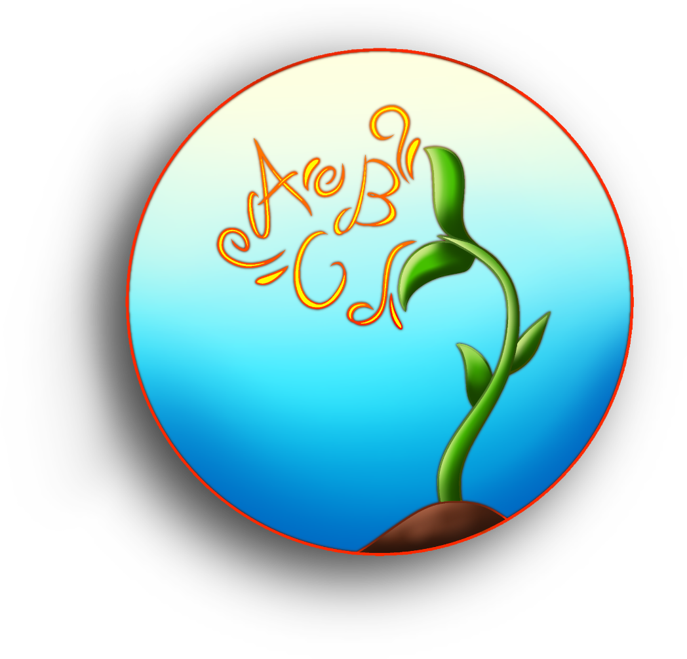
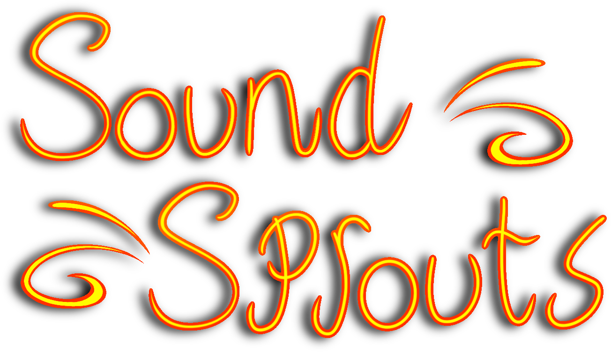
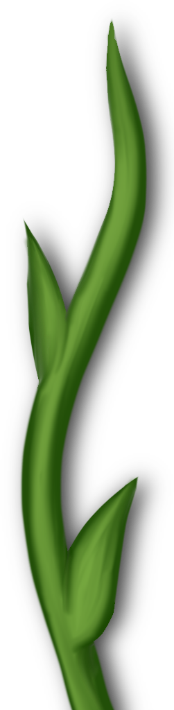
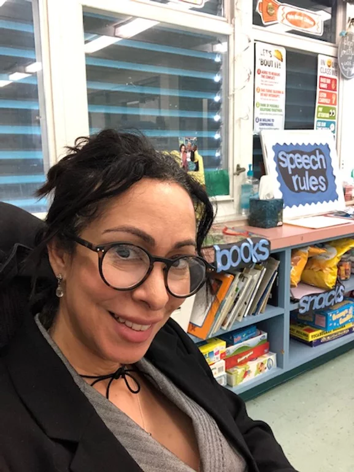

Because sounds lead to words
and words lead to sentences.



ABOUT THE AUTHOR:
Hi there! I'm a speech-language pathologist who has been working in the profession for over twenty-five years. Throughout my practice, I found myself often reaching for books when introducing new concepts, particularly with the younger children. But, I always felt it would be fantastic, if the books would have a predetermined set of goals with fun story lines. No brainer books! My love of books and literacy prompted the idea of writing a book series. It gave me the opportunity to pack into them early learning skills that are essential in a child’s development of speech sounds, language, and literacy.
